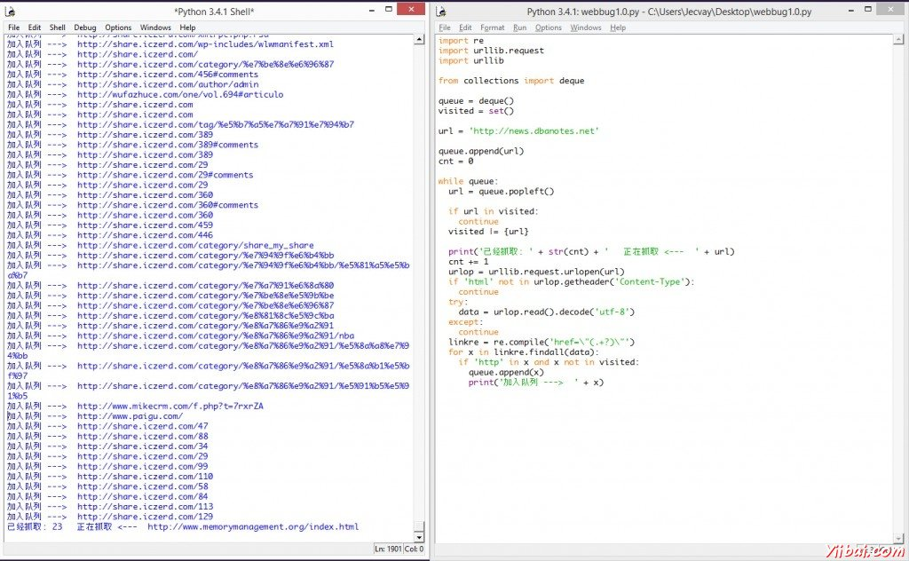

Python 3开发网络爬虫(二)
上一回, 我学会了
- 用伪代码写出爬虫的主要框架;
- 用Python的urllib.request库抓取指定url的页面;
- 用Python的urllib.parse库对普通字符串转符合url的字符串.
这一回, 开始用Python将伪代码中的所有部分实现. 由于文章的标题就是”零基础”, 因此会先把用到的两种数据结构 队列 和 集合 介绍一下. 而对于” 正则表达式 “部分, 限于篇幅不能介绍, 但给出我比较喜欢的几个参考资料.
Python的队列
在爬虫程序中, 用到了广度优先搜索(BFS)算法. 这个算法用到的数据结构就是队列.
Python的List功能已经足够完成队列的功能, 可以用 append() 来向队尾添加元素, _________________, 可以用 pop(0) 来弹出队首元素. 但是List用来完成队列功能其实是 低效率 的, 因为List在队首使用 pop(0) 和 ______() 都是效率比较低的, Python官方建议使用 collection.deque 来高效的完成队列任务.
from collections import deque
queue = deque(["Eric", "John", "Michael"])
queue.append("Terry") # _____ 入队
queue.append("Graham") # Graham 入队
queue.popleft() # 队首元素出队
#输出: 'Eric'
queue.popleft() # ______
#__: 'John'
queue # 队列中剩下的元素
#输出: _____(['_______', 'Terry', 'Graham'])
(以上例子引用自官方文档)
Python的集合
在爬虫程序中, 为了不重复爬那些已经爬过的网站, 我们需要把爬过的页面的url放进集合中, 在每一次要爬某一个url之前, _____________. 如果已经存在, 我们就跳过这个url; 如果不存在, 我们先把url放入集合中, _________.
Python提供了set这种数据结构. set是一种无序的, 不包含重复元素的结构. 一般用来测试是否已经包含了某元素, ____________. 与数学中的集合论同样, 他支持的运算有 交, 并, 差, 对称差 .
创建一个set可以用 set() 函数或者花括号 {} . 但是创建一个空集是不能使用一个花括号的, 只能用 set() 函数. _______________ 字典 数据结构. 以下同样是Python官网提供的示例.
>>> basket = {'apple', '______', 'apple', 'pear', 'orange', 'banana'}
>>> _____(______) # 这里演示的是去重功能
{'orange', 'banana', '____', 'apple'}
>>> 'orange' in basket # 快速判断元素是否在集合内
True
>>> 'crabgrass' in ______
_____
>>> # 下面展示两个集合间的运算.
...
>>> a = set('abracadabra')
>>> b = set('alacazam')
>>> _
{'a', '_', 'b', 'c', 'd'}
>>> a - b # 集合a中包含元素
{'r', 'd', 'b'}
>>> _ | b # 集合a或b中包含的所有元素
{'a', 'c', '_', 'd', 'b', 'm', 'z', 'l'}
>>> a & b # 集合a和b中都包含了的元素
{'a', 'c'}
>>> a ^ b # 不同时包含于a和b的元素
{'r', '_', 'b', 'm', 'z', 'l'
其实我们只是用到其中的 快速判断元素是否在集合内 的功能, 以及集合的 并运算 .
Python的正则表达式
在爬虫程序中, 爬回来的数据是一个字符串, 字符串的内容是页面的html代码. 我们要从字符串中, ______________. 这就要求爬虫程序要有简单的字符串处理能力, 而正则表达式可以很轻松的完成这一任务.
参考资料
虽然正则表达式功能异常强大, 很多实际上用的规则也非常巧妙, 真正熟练正则表达式需要比较长的实践锻炼. 不过我们只需要掌握如何使用正则表达式在一个字符串中, ___________, 就可以了. 如果实在想要跳过这一部分, 可以在网上找到很多现成的匹配url的表达式, 拿来用即可.
Python网络爬虫Ver 1.0 alpha
有了以上铺垫, 终于可以开始写真正的爬虫了. 我选择的入口地址是Fenng叔的 Startup News , 我想Fenng叔刚刚拿到7000万美金融资, 不会介意大家的爬虫去光临他家的小站吧. 这个爬虫虽然可以勉强运行起来, ______ 异常处理 , 只能爬些静态页面, 也不会分辨什么是静态什么是动态, 碰到什么情况应该跳过, _____________.
import re
import urllib.request
import urllib
____ collections import deque
queue = deque()
visited = set()
url = 'http://news.dbanotes.net' # 入口页面, ______
queue.append(url)
cnt = 0
while _____:
url = queue.popleft() # 队首元素出队
visited |= {url} # 标记为已访问
print('已经抓取: ' + ___(___) + ' ____ <--- ' + ___)
cnt += 1
urlop = urllib.request.urlopen(url)
__ 'html' not in urlop.getheader('Content-Type'):
continue
# 避免程序异常中止, 用try..catch处理异常
___:
data = urlop.read().decode('utf-8')
except:
continue
# 正则表达式提取页面中所有队列, 并判断是否已经访问过, 然后加入待爬队列
______ = re.compile('href=\"(.+?)\"')
for _ in linkre.findall(data):
if 'http' in x ___ x not in visited:
_____.______(_)
print('加入队列 ---> ' + x)
这个版本的爬虫使用的正则表达式是
'href=\"(.+?)\"'
所以会把那些.ico或者.jpg的链接都爬下来. 这样read()了之后碰上decode(‘utf-8′)就要抛出异常. 因此我们用 getheader() 函数来获取抓取到的文件类型, 是html再继续分析其中的链接.
if 'html' not in _____._________('_______-____'):
continue
但是即使是这样, 依然有些网站运行decode()会异常. 因此我们把decode()函数用try..catch语句包围住, 这样他就不会导致程序中止. _________:

爬虫是可以工作了, 但是在碰到连不上的链接的时候, 它并不会超时跳过. 而且爬到的内容并没有进行处理, _____________, 也没有保存到本地. 下次我们可以完善这个alpha版本.
标签： Python3 网络爬虫
欢迎任何形式的转载，但请务必注明出处，尊重他人劳动共创优秀实例教程
转载请注明：文章转载自： 易百教程 [ http:/www.yiibai.com ]
本文标题： Python 3开发网络爬虫(二)
本文地址： http://www.yiibai.com/python/python3-webbug-series2.html